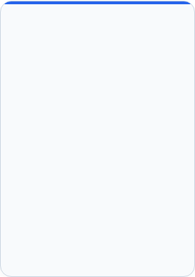
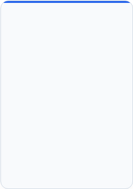

Gestión del presupuesto familiar
M Finance
La aplicación inteligente e integral que reúne todos sus gastos, ingresos, cuentas bancarias y tarjetas de crédito en un solo lugar. Análisis completo del pasado, control del presente y planificación precisa del futuro en una interfaz accesible.


M Solution Group


Decisiones basadas en datos
Pasar de estimaciones a hechos - tomar decisiones financieras basadas en datos reales en lugar de confiar en la memoria o la intuición.
Ahorro de tiempo y esfuerzo - una reducción drástica del trabajo manual asociado con el seguimiento diario y mensual de gastos e ingresos.
Un único centro de control - recopilación, organización y presentación de toda la información financiera mensual y anual en un solo lugar.
Alcance del seguimiento - 360 grados
Documentación del pasado - un análisis organizado y completo de todas las transacciones ya ocurridas en cuentas bancarias y tarjetas de crédito.
Análisis del presente - una instantánea actualizada en tiempo real de la distribución actual de gastos e ingresos.
Mirando hacia el futuro - herramientas interactivas para planificar con meses de antelación, distribuir pagos y pronosticar el flujo de caja con precisión.
Flexibilidad total - reconocimiento automático del formato de datos de instituciones financieras nacionales e internacionales.
Enfoque profesional - el sistema se centra únicamente en analizar y presentar información, sin realizar operaciones bancarias reales como transferencias o pagos
El propósito del sistema y el alcance de la actividad
M Solution Group





La pantalla de bienvenida y la experiencia de entrada
Al entrar en la aplicación se abre una pantalla de bienvenida diseñada al estilo de un elegante pergamino que incluye un saludo de bienvenida en el idioma elegido y la bandera de ese idioma
Al hacer clic en la pantalla se cierra la puerta y se abre todo el contenido del proyecto
Un sistema multilingüe
Una fila de banderas en la parte superior de la pantalla permite cambiar instantáneamente entre 11 idiomas con solo pulsar un botón
todos los títulos, etiquetas y mensajes del sistema se traducen al instante con un clic, sin perder ningún dato
Consideración hacia los
usuarios zurdos
Un panel de control móvil derecha/izquierda
El panel de control principal siempre está visible y disponible
Con un solo clic en un selector en la parte inferior del panel, se puede mover del lado derecho al izquierdo y viceversa
Para la máxima comodidad de personas diestras y zurdas
Inteligencia artificial (IA)
Algoritmos inteligentes basados en inteligencia artificial ayudan con la clasificación y el análisis
Un indicador especial de IA en la parte inferior del panel muestra verde disponible o rojo no disponible
La aplicación tiene cierta capacidad de seguir funcionando incluso cuando la IA inteligencia artificial no está disponible
Experiencia de usuario, accesibilidad y multilingüismo
M Solution Group


La capa de interfaz de usuario
Frontend del sistema y navegación:
La capa de lógica y negocio
El motor de procesamiento inteligente:
La capa de base de datos
Almacenamiento y memoria del sistema:
• Recepción de comandos y selecciones del panel de control
• Gestión de un diálogo claro entre humano y máquina
• Acceso a carpetas y recuperación de archivos
• Reconocimiento de diversos tipos de archivos
• Construcción de una interfaz de comunicación unificada
• Gestión de la visualización de la base de datos
• Creación de un entorno de pruebas seguro
• Lectura de datos y prevención de duplicados
• Mapeo de la estructura de instituciones financieras
• Un motor de clasificación automática inteligente
• Aplicación de reglas de clasificación locales
• Creación de vistas personalizadas
• Una fábrica de tablas para generar informes
• Guardado de configuraciones y listas globales
• Carga y guardado de archivos de datos estructurados
• Gestión del archivo de base de datos principal
• Una memoria de clasificación que aprende y mejora
• Guardado del historial anual y mensual
Estructura del sistema: capas de trabajo
M Solution Group


Métodos de carga flexibles para el cliente
Protección contra duplicados y enfoque de cuentas
Carga de un solo archivo: selección de un archivo de datos específico descargado del banco o las tarjetas de crédito.
Carga de una carpeta completa: carga simultánea de todos los archivos de datos ubicados en una carpeta específica.
Carga automática: el software carga todos los archivos por sí mismo sin necesidad de aprobación individual para cada archivo.
Un administrador de archivos integrado: al hacer clic en "Cargar" se abre un administrador de archivos para una selección fácil.
Un mecanismo de protección contra duplicados: el software identifica transacciones ya existentes y no las añadirá dos veces. Puede volver a cargar un archivo ya cargado anteriormente con tranquilidad, sin temer que las cifras se "inflen".
Reconocimiento de números de cuenta: junto a los botones de carga aparece una etiqueta "N.º de cuenta" extraída automáticamente de los datos.
Selección de números de cuenta a mostrar: las casillas de verificación permiten elegir en qué cuentas centrarse y filtrar hasta 4 cuentas bancarias diferentes en paralelo.
Carga de datos, protección contra duplicados y filtrado
M Solution Group


Instalación y actualizaciones transparentes - la instalación y las actualizaciones se realizan a través del sitio KeyClick de forma totalmente transparente
el cliente siempre trabaja con la versión más reciente sin necesidad de realizar ninguna acción
Conexión bancaria directa
Al hacer clic en el botón "Institución financiera" se le dirige a los servicios bancarios. Este servicio permite una conexión directa y segura a instituciones financieras nacionales e internacionales configuradas en el sistema.
Métodos de descarga
Una opción para la descarga automática de archivos de estados de cuenta al ordenador personal para carga manual, o descarga directa a la aplicación.
Seguridad de nivel bancario
La conexión la realiza únicamente el cliente, exactamente como lo hace siempre según la configuración de seguridad del banco. Inmediatamente después de descargar los datos, se bloquea y se desconecta.
Una experiencia en un entorno avanzado
Una experiencia en un entorno tecnológico inteligente y avanzado que permite un uso seguro y rápido del flujo de información.
Conexión directa a instituciones financieras y servicios bancarios
M Solution Group


La tabla central y el análisis de datos
Una matriz amplia: una presentación anual
Columnas = meses
Tabla principal: saldo, totales de ingresos y gastos, saldo anterior y total del mes
Tabla secundaria: una tabla de clasificaciones. Cada transacción se clasifica en una lista fija de categorías. En esta tabla, cada fila muestra el total de esa categoría.
Detalle de clasificaciones: al seleccionar una fila de clasificación, se abre una tabla detallada de esa categoría.
Herramientas de control, interruptores y exportación
Interruptores de control importantes en la parte superior de la pantalla:
Incluir futuro
Incluye u omite planes futuros y órdenes permanentes de la previsión de cálculo.
Incluir tarjetas de crédito
Control sobre la inclusión de detalles de transacciones de crédito en la imagen general.
Botones de acción: Actualizar para refrescar los datos, Exportar para guardar la tabla como archivo de hoja de cálculo o documento digital imprimible, además de botones de actualización y limpieza.
Estado de cuenta anual
M Solution Group


Selección de año y mes
En la parte superior de la página - mueve la pantalla al mes solicitado - una columna del estado de cuenta anual
Una lista de gastos. Un resumen de clasificaciones
Una lista detallada de gastos para el mes seleccionado junto a un resumen de transacciones ordenadas por categoría
Ingresos futuros. Gastos futuros
Una visualización enfocada de todos los ingresos y gastos planificados y esperados para ese mes específico.
Cálculo de saldo. Balance mensual
Cálculo del saldo acumulado junto a un resumen final del balance mensual. Ingresos reales frente a gastos
Tarjetas de crédito. Cuentas bancarias
Un resumen de los datos de tarjetas de crédito activas y cuentas bancarias, teniendo en cuenta las fechas de cobro reales.
Estado de cuenta mensual
M Solution Group


Un motor de clasificación que aprende y memoria del sistema
Organización automática: el software clasifica las transacciones según sus reglas predefinidas al importarlas.
Corrección fácil y sencilla: en la pantalla de clasificaciones, un estado de cuenta ordenado por categorías, se puede cambiar cualquier clasificación. El cambio se registrará en el sistema
Memoria inteligente para futuras cargas: cuando cambia la clasificación de una transacción, el sistema recuerda la elección y clasifica automáticamente futuras transacciones con una descripción similar.
Un mecanismo de crédito dedicado
Separación entre compra y cobro: gestión de la brecha temporal entre la fecha real de compra y la fecha de cobro en la cuenta bancaria.
Pagos en cuotas: integración precisa de transacciones en cuotas dentro de la imagen anual y mensual.
Una visualización de tarjetas de dos niveles: en la parte superior - una tabla resumen de todas las tarjetas. Al seleccionar una tarjeta - se abre una tabla inferior con detalles por comercio facturador.
Clasificación inteligente y manejo dedicado de tarjetas de crédito
M Solution Group


La tarjeta de configuración de transacciones futuras
En la pantalla "Cuenta futura" se gestionan gastos e ingresos conocidos
de antemano: órdenes permanentes, suscripciones, pagos esperados; para cada elemento, la tarjeta de edición incluye:
Botones de gestión - actualizar, nuevo, editar, restablecer, eliminar y duplicar filas existentes.
Distribución automática e integración en informes
Cálculo de distribución hacia adelante - una vez establecida una fecha de inicio y un número de pagos, el software distribuye la cantidad a lo largo de todos los meses relevantes.
Integración dinámica - los datos futuros se integran automáticamente en el estado de cuenta anual y mensual cuando se activa el interruptor "Incluir futuro".
Actualización mensual continua - posibilidad de actualizar, modificar o eliminar elementos futuros en cualquier momento según cambios en la realidad económica.
• Origen, banco y número de cuenta
• Clasificación de la transacción, descripción y nota libre
• Definición como ingreso o gasto
• Fecha de inicio y número de pagos planificados
Planificación futura - previsión presupuestaria
M Solution Group


El estado de cuenta en vista gráfica
Una presentación visual de todos los datos financieros en forma gráfica.
Seleccione cualquier elemento y obtenga inmediatamente una vista gráfica anual sobre él.
Un gráfico circular de presupuesto vivo – regulación interactiva
Una herramienta única para planificar un presupuesto equilibrado - las porciones de gastos se muestran colocadas directamente sobre el gráfico de ingresos.
Regulación en vivo - una tabla junto al gráfico incluye controles deslizantes inteligentes que permiten subir o bajar manualmente los valores de las porciones.
Alcanzar el equilibrio - una simulación en tiempo real que examina cómo un cambio en un elemento conduce a un presupuesto totalmente equilibrado.
Botones - Actualizar, Restablecer, Refrescar.
• Gráficos de balance y tendencias de saldo a lo largo del tiempo
• Gráficos de gastos e ingresos por períodos
• Una vista enfocada por categoría o elemento individual
• Gráficos dedicados para planificación futura y tarjetas de crédito
Vistas gráficas y el gráfico circular de presupuesto vivo
M Solution Group


Un tablero de mensajes fijo de 3 niveles
En la parte inferior de la pantalla, de forma permanente durante todo el trabajo, hay 3 tableros de mensajes separados:
• Mensajes del sistema: indicaciones continuas sobre acciones realizadas en segundo plano.
• Mensajes de orientación: consejos, instrucciones y guía en tiempo real para realizar acciones.
• Mensajes de error: alertas claras en caso de fallo o archivo inválido.
Botones disponibles: borrar mensajes o exportar mensajes a un archivo externo.
Reinicio, reinicio completo y salida
Si el cliente desea empezar de nuevo
existen dos botones de reinicio separados y seguros:
• Restablecer base de datos: elimina todas las transacciones cargadas en la base de datos.
• Restablecer clasificaciones: elimina las reglas de clasificación aprendidas y establecidas para las transacciones.
• Botón Salir: una salida ordenada y segura de la aplicación guardando todos los datos.
Tableros de mensajes, reinicio del sistema, cierre y salida
M Solution Group

M Finance
Un sistema de gestión del presupuesto familiar
Que le brinda el control financiero perfecto
M Solution Group